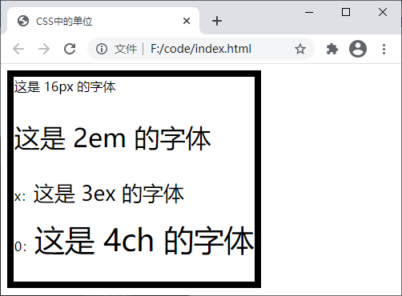
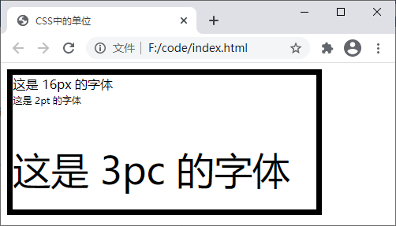

CSS长度单位汇总
通过前面的学习我们知道一个 CSS 样式由选择器、属性和值三个部分组成（例如
【示例】下面通过一个综合的示例演示相对长度单位的使用：
【示例】下面通过一个综合的示例演示绝对长度单位的使用：
p{width: 100px;}），在设置某些属性值时可能会涉及到与值对应的单位。CSS 支持多种不同的长度单位，根据类型的不同可以分为两类，分别是绝对长度单位（例如英寸、厘米、点）和相对长度单位（例如百分比）。本节我们就来简单了解一下 CSS 中的几种度量单位。1. 相对长度单位
相对长度单位指的是这个单位没有一个固定的值，它的值受到其它元素属性（例如浏览器窗口的大小、父级元素的大小）的影响，在响应式布局方面相对长度单位非常适用。下表中列举了 CSS 中支持的相对长度单位：| 单位 | 描述 | 示例 |
|---|---|---|
| em | 相对于自身 font-size（字体大小）属性的值，如果自身没有设置，则继承父元素 font-size 属性的值，1em 等同于 font-size 属性值，例如 font-size 的值为 16px，那么 1em 就等于 16px，2em 就等于 32px | p{line-height:2em;} |
| rem |
相对于根元素 <html> 的 font-size 属性的大小，比如根元素的 font-size 是 100px，那么 1.2rem 就相当于 120px |
p{font-size: 1.2rem;} |
| ex | 相对于所用字体中小写英文字母 x 的高度，若无法确定 x 的高度则使用 0.5em 计算 | p{font-size: 1ex;} |
| ch | 相对于所用字体中数字 0 的高度，若无法确定 0 的高度则使用 0.5em 计算 | p{line-height: 3ch} |
| vw | 相对于浏览器窗口的宽度，1vw = 窗口宽度的 1% | p{font-size: 5vw;} |
| vh | 相对于浏览器窗口的高度，1vh = 窗口高度的 1% | p{font-size: 5vh;} |
| vmin | vw 与 vh 中较小的值 | p{font-size: 5vmin;} |
| vmax | vw 与 vh 中较大的值 | p{font-size: 5vmax;} |
| % | 相对于父元素宽度或字体大小的百分比 | div{width: 55%} |
【示例】下面通过一个综合的示例演示相对长度单位的使用：
<!DOCTYPE html>
<html>
<head>
<title>CSS中的单位</title>
<style>
.box{
width: 60vw;
height: 88vh;
border: 1ex solid black;
font-size: 16px;
}
.info{
font-size: 2em;
}
.ex > span{
font-size: 3ex;
}
.ch > span{
font-size: 4ch;
}
</style>
</head>
<body>
<div class="box">
这是 16px 的字体
<p class="info">这是 2em 的字体</p>
<p class="ex">
x：<span>这是 3ex 的字体</span>
</p>
<p class="ch">
0：<span>这是 4ch 的字体</span>
</p>
</div>
</body>
</html>
运行结果如下图所示：

图1：相对长度单位的应用
图1：相对长度单位的应用
2. 绝对长度单位
绝对长度单位表示一个真实的物理尺寸，它的大小是固定的，不会因为其它元素尺寸的变化而变化。下表中列举了 CSS 中支持的绝对长度单位：| 单位 | 描述 | 示例 |
|---|---|---|
| cm | 厘米 | p{font-size: 0.5cm;} |
| mm | 毫米 | p{font-size: 5mm;} |
| in | 英寸（1in = 96px = 2.54cm） | p{font-size: 1in;} |
| px | 像素（1px = 1/96in） | p{font-size: 16px;} |
| pt | point，是一种专用的印刷单位“磅”，也可以称为“点”（1pt = 1/72in） | p{font-size: 16pt;} |
| pc | pica，中文可称为“派卡”，印刷行业用于描述字体大小的单位，相当于我国新四号铅字的尺寸（1pc = 12pt） | p{font-size: 5pc;} |
【示例】下面通过一个综合的示例演示绝对长度单位的使用：
<!DOCTYPE html>
<html>
<head>
<title>CSS中的单位</title>
<style>
.box{
width: 4in;
height: 4.5cm;
border: 2mm solid black;
font-size: 16px;
}
.pt{
font-size: 2pt;
}
.pc{
font-size: 3pc;
}
</style>
</head>
<body>
<div class="box">
这是 16px 的字体
<p class="pt">这是 2pt 的字体</p>
<p class="pc">这是 3pc 的字体</p>
</div>
</body>
</html>
运行结果如下图所示：

图2：绝对长度单位的应用
图2：绝对长度单位的应用
关注公众号「站长严长生」，在手机上阅读所有教程，随时随地都能学习。内含一款搜索神器，免费下载全网书籍和视频。

微信扫码关注公众号